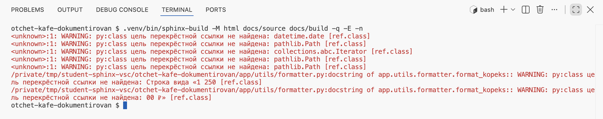
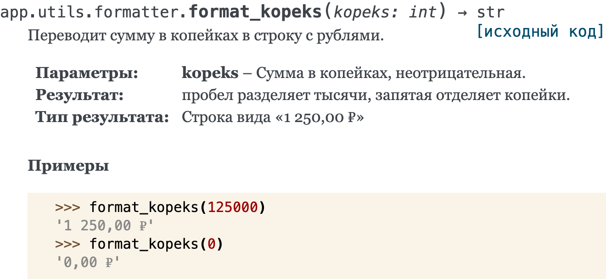
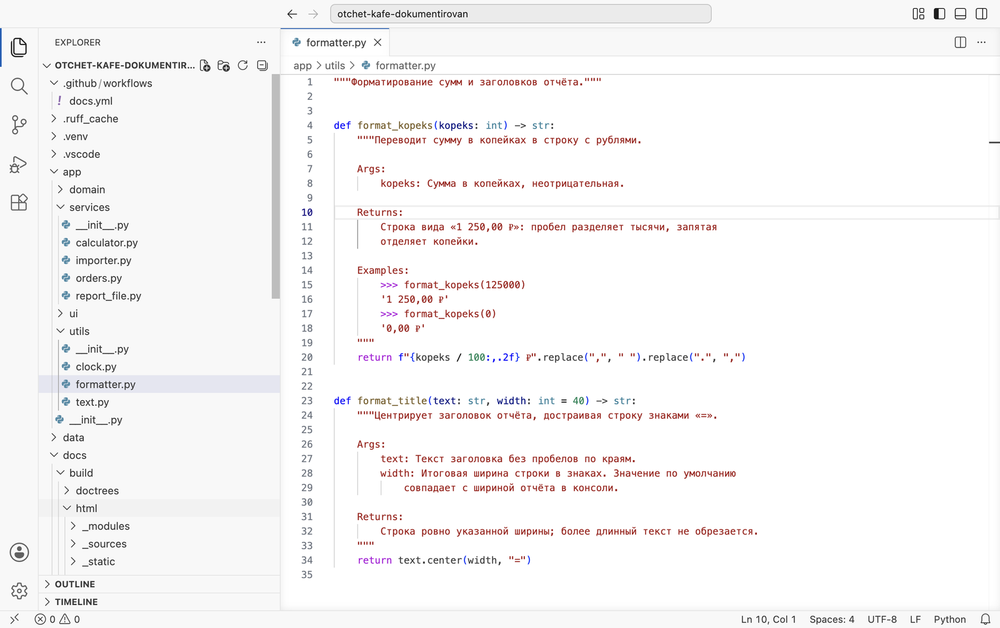
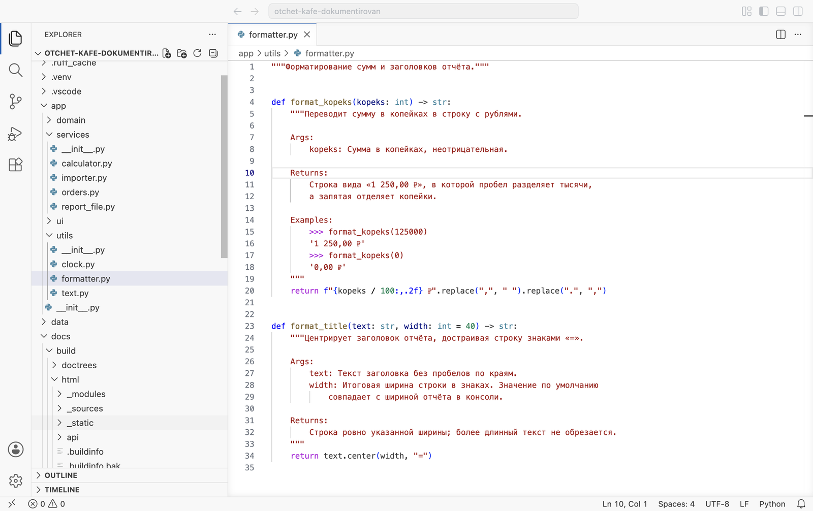
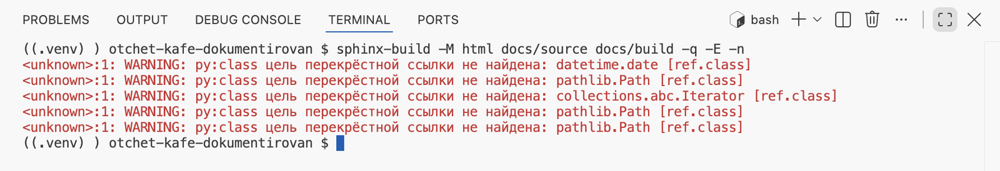
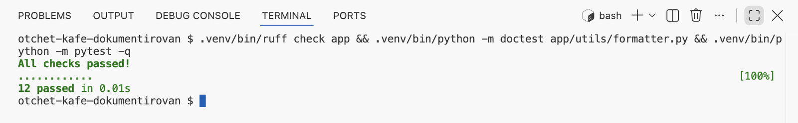
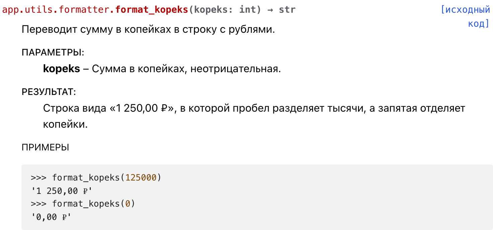

Аннотации типов и документация кода · МДК.01.01 · разработка программных модулей
Глава 4.16
Практика:
сайт документации
В этой главе две работы. На паре сайт документации «Отчёта кафе» собирается с нуля, на новой копии третьего архива, без подсказок по ходу: каждый шаг заканчивается сборкой и сверкой числа предупреждений с лентой отсчёта. По дороге сайт находит в эталонном проекте ошибку в докстринге, которую не заметили ни Ruff, ни обычная сборка. Домашняя работа — сайт для своего проекта Student Tools, опубликованный на GitHub Pages. В конце — критерии оценки и порядок сдачи.
- Категория
- Практика
- Время на паре
- Около 80 минут
- Инструменты
- Sphinx 9.1.1, Furo, GitHub Actions
- Результат
- Сайт без предупреждений; дома — опубликованный сайт
В главах 4.12–4.15 сайт собирался по частям, с остановками на каждой ошибке. В этой главе тот же путь проходится целиком и самостоятельно: на паре — на новой копии «Отчёта кафе», дома — на своём проекте с публикацией.
§1Работа на паре: сайт с нуля
Работа идёт на новой копии третьего архива — распакуйте его в новую папку, отдельно от той, где выполнялись задания глав 4.12–4.15. Так сайт собирается только по шагам из глав, без следов прежних опытов. Если после главы 4.11 у вас свой задокументированный «Отчёт кафе», можно взять его: числа в ленте отсчёта тогда будут свои.
| Что нужно на паре | Откуда взять |
|---|---|
| Проект | Третий архив — кнопка выше |
| Окружение с зависимостями проекта, Sphinx и Furo | Глава 4.12, §2; глава 4.15, §2 |
Ответы мастеру и состав docs | Глава 4.12, §3–4 |
| Путь к проекту, autodoc, napoleon | Глава 4.13, §3–5 |
| Команда apidoc и оглавление | Глава 4.14, §3–5 |
§2Порядок выполнения
Команды записаны для терминала с активированным окружением: source .venv/bin/activate.venv\Scripts\Activate.ps1 в PowerShell. Каждую сборку запускайте с -q -E: в выводе только предупреждения, и все модули перечитываются заново. Под «числом предупреждений» дальше понимается число строк с WARNING или ERROR.
Подготовьте проект и окружение
Создайте .venv, установите requirements.txt, затем pip install sphinx==9.1.1 furo==2025.12.19. Проверьте, что проект в порядке: python -m pytest -q — 12 passed, ruff check app — All checks passed!.
Создайте заготовку docs
sphinx-quickstart docs с ответами y, «Отчёт кафе», ваше имя, 1.0, ru. Положите пустой docs/source/_static/.gitkeep. Проверьте, что в .gitignore есть docs/build/. Соберите: вывод пуст, главная страница открывается.
Подключите модули без napoleon
В conf.py — строка с sys.path.insert и расширения sphinx.ext.autodoc и sphinx.ext.viewcode. Создайте страницы пакетов: SPHINX_APIDOC_OPTIONS=members sphinx-apidoc -f -M -o docs/source/api app$env:SPHINX_APIDOC_OPTIONS = "members"; sphinx-apidoc -f -M -o docs/source/api app. Добавьте api/modules в оглавление index.rst, подпись оглавления — «Содержание:». Соберите.
…/app/services/orders.py:docstring of app.services.orders.revenue_by_waiter:6: ERROR: Unexpected indentation. [docutils] …/app/services/report_file.py:docstring of app.services.report_file.save_report:6: WARNING: Definition list ends without a blank line; unexpected unindent. [docutils] …/app/utils/formatter.py:docstring of app.utils.formatter.format_title:6: ERROR: Unexpected indentation. [docutils]
Три сообщения в трёх модулях. Все они — продолжения строк в разделах Google, которые reStructuredText без napoleon считает ошибкой отступа (глава 4.13, §4). Докстринги здесь исправлять не нужно.
Включите napoleon
Добавьте sphinx.ext.napoleon вторым в список расширений и три настройки: napoleon_google_docstring = True, napoleon_numpy_docstring = False, napoleon_use_ivar = True. Соберите: вывод пуст. Откройте страницы пакетов и проверьте, что у функций поля «Параметры», «Результат», «Исключение», у классов Order и Shift — поле «Переменные».
Проверьте ссылки строгим режимом
Имена типов в подписях и роли :func: на сайте — ссылки на описания. Ключ -n включает строгую проверку ссылок: сборка печатает предупреждение о каждой ссылке, цель которой на сайте не найдена. Соберите с ним: sphinx-build -M html docs/source docs/build -q -E -n.

<unknown> в начале — типы datetime.date, pathlib.Path, collections.abc.Iterator из аннотаций. Две последние начинаются с formatter.py:docstring of app.utils.formatter.format_kopeks и заканчиваются странными именами классов: «Строка вида «1 250» и «00 ₽»».Первые пять строк — типы стандартной библиотеки из аннотаций: они описаны в документации Python, на сайте проекта их нет, поэтому такие строки ожидаемы, и в постоянную сборку ключ -n не включают. Две последние относятся к докстрингу format_kopeks: Sphinx ищет класс с именем «Строка вида «1 250» и класс «00 ₽»». Откройте на сайте страницу пакета app.utils и найдите эту функцию.

Найдите причину и исправьте докстринг
Исходный текст раздела:

app/utils/formatter.py, функция format_kopeks. Строка 10 — Returns:, строка 11 — Строка вида «1 250,00 ₽»: пробел разделяет тысячи, запятая. Двоеточие стоит в середине первой строки раздела.В формате Google раздел Returns: может начинаться с типа результата: str: Строка вида…. Napoleon считает типом всё, что стоит в первой строке раздела до двоеточия. Здесь двоеточие стоит внутри фразы, и napoleon разрезал её. Запятая внутри «1 250,00» разделила мнимый тип ещё на два «класса» — отсюда две строки в выводе. Ruff это место не отмечает: по его правилам раздел оформлен верно. В подсказке редактора и в help() текст тоже выглядит правильно, потому что там его никто не разбирает.
Исправление — убрать двоеточие из первой строки раздела:

11–12 после правки: двоеточия в первой строке раздела нет, смысл фразы прежний.Соберите с -q -E -n ещё раз.

format_kopeks нет.Проверьте, что правка не сломала остальное: Ruff, примеры из докстринга и тесты.

All checks passed! от Ruff; doctest молчит — оба примера из Examples: совпали; 12 passed от pytest.
Добавьте страницу о запуске и тему
Создайте usage.rst по образцу главы 4.14, §1, поставьте его первым в оглавлении. Замените заголовок и абзац в index.rst на свои. Задайте html_theme = 'furo' и html_title, создайте docs/requirements.txt. Финальная проверка — строгая сборка: sphinx-build -M html docs/source docs/build -E -W --keep-going, итог — сборка успешна.
Число предупреждений после каждого шага
Числа получены на третьем архиве в этом порядке шагов. Пять строк -n о datetime.date, pathlib.Path и collections.abc.Iterator остаются и ошибкой не считаются: ключ -n в постоянную сборку не входит. Строгая сборка с -W в конце проходит без предупреждений.
За тему проект прошёл четыре проверки. mypy сверяет типы, Ruff — наличие и оформление докстрингов, обычная сборка Sphinx — разметку, сборка с -n — ссылки. Ошибку в format_kopeks нашла только последняя, а увидеть её можно было и глазами, прочитав страницу сайта. Поэтому финальная проверка документации — чтение собранного сайта подряд, как help() в главе 4.11.
§3Что сдаётся с пары
Работа принята, когда
sphinx-build -M html docs/source docs/build -E -W --keep-going отвечает сборка успешна.app с четырьмя вложенными пакетами; у функций поля «Параметры», «Результат», «Исключение».-n не печатает строк о format_kopeks; тесты и Ruff проходят.html_title, файл docs/requirements.txt с точными версиями.docs/build в .gitignore, в _static лежит .gitkeep.Свою папку сверьте с эталоном — четвёртым архивом. Состав docs/source должен совпасть, тексты index.rst и usage.rst могут отличаться.
§4Домашняя работа: lesson_08
В личном репозитории дисциплины создайте папку lesson_08 и скопируйте в неё проект Student Tools из папки lesson_04: с аннотациями, докстрингами и функциями save_report и grade_bounds. Папку lesson_04 не изменяйте. Задача — собрать для проекта сайт документации и опубликовать его на GitHub Pages репозитория.
Работа делается по порядку пары. Отличие одно: проект лежит в папке lesson_08 внутри репозитория. Путь в conf.py от этого не меняется — parents[2] от lesson_08/docs/source/conf.py указывает на lesson_08. Меняется workflow: он лежит в корне репозитория, а команды выполняет в папке проекта (§5).
GitHub Pages в бесплатном плане включается у публичного репозитория. Если репозиторий дисциплины закрытый, Pages доступны с пакетом GitHub Education для студентов — он даёт план Pro. Если ни то ни другое недоступно, сдайте работу без публикации: в README укажите, что сайт не опубликован, и приложите снимок главной страницы собранного сайта lesson_08/docs/home.png; критерий публикации тогда не оценивается, а максимум — 8 баллов.
§5Состав папки и workflow для подпапки
| Файл или папка | Что в нём |
|---|---|
lesson_08/app/, main.py, tests/ | Проект из lesson_04; докстринги исправлены там, где этого потребовала сборка |
lesson_08/docs/source/conf.py | Путь к проекту, autodoc, napoleon с тремя настройками, viewcode, language = 'ru', тема Furo, html_title |
lesson_08/docs/source/index.rst | Свой заголовок и абзац о проекте, оглавление: usage, api/modules |
lesson_08/docs/source/usage.rst | Запуск, проверки и хотя бы одна ссылка :func: на функцию проекта |
lesson_08/docs/source/api/ | Файлы sphinx-apidoc с одним параметром :members: |
lesson_08/docs/source/_static/.gitkeep | Пустой файл |
lesson_08/docs/requirements.txt | Sphinx и Furo с точными версиями |
lesson_08/README.md | Разделы из lesson_04 плюс раздел «Документация»: адрес сайта, команды сборки и пересоздания страниц apidoc |
.github/workflows/docs.yml | В корне репозитория, не в lesson_08: GitHub читает workflow только оттуда |
Workflow отличается от главы 4.15 тремя местами — они отмечены комментариями:
name: Документация on: push: branches: [main] paths: ["lesson_08/**"] # 1. только при изменениях в lesson_08 workflow_dispatch: permissions: contents: read pages: write id-token: write concurrency: group: pages cancel-in-progress: true jobs: build: runs-on: ubuntu-latest defaults: run: working-directory: lesson_08 # 2. команды run — из папки проекта steps: - uses: actions/checkout@v5 - uses: actions/setup-python@v6 with: python-version: "3.12" - run: pip install -r requirements.txt -r docs/requirements.txt - run: sphinx-build -M html docs/source docs/build -W --keep-going - uses: actions/upload-pages-artifact@v4 with: path: lesson_08/docs/build/html # 3. путь от корня репозитория deploy: needs: build runs-on: ubuntu-latest environment: name: github-pages url: ${{ steps.deployment.outputs.page_url }} steps: - id: deployment uses: actions/deploy-pages@v4
paths— workflow запускается, только если коммит меняет файлы внутриlesson_08. Сдача других работ сайт не пересобирает.working-directoryдействует на строкиrun::pipиsphinx-buildвыполняются изlesson_08, поэтому пути в них те же, что в главе 4.15.- На строки
uses:working-directoryне действует: путь дляupload-pages-artifactпишется от корня репозитория.
§6Проверка перед сдачей
- В папке
lesson_08создайте новое окружение и установите оба списка зависимостей. - Выполните
python -m pytest -v,mypy app,ruff check app: всё проходит, как вlesson_04. - Удалите
docs/buildи выполнитеsphinx-build -M html docs/source docs/build -E -W --keep-going:сборка успешна. - Выполните сборку с
-q -E -n. Допустимы только строки о классах стандартной библиотеки (pathlib.Path,datetime.dateи подобных); строки с текстом из ваших докстрингов исправьте. - Откройте сайт и прочитайте подряд страницы всех пакетов. Каждый модуль на месте, у функций нет полей с обрывками фраз, ссылки из
usage.rstведут на функции. - После отправки откройте вкладку Actions: последний запуск «Документация» зелёный. Откройте адрес сайта из Settings → Pages и сверьте его с локальной сборкой.
- Проверьте, что в репозиторий не попали
.venv/иdocs/build/.
§7Критерии оценки
| За что | Баллы | Что проверяется |
|---|---|---|
| Заготовка и настройки | 2 | Папка docs с разделёнными source и build, conf.py с путём, тремя расширениями и настройками napoleon, .gitkeep, docs/build в .gitignore |
| Страницы модулей | 2 | Все пакеты созданы sphinx-apidoc с параметром :members: и подключены в оглавление; поля Google показаны как «Параметры», «Результат», «Исключение» |
| Своя страница и главная | 2 | usage.rst с заголовками, списком, блоком команд и ссылкой :func:; главная со своим текстом |
| Чистая сборка и докстринги | 2 | Сборка с -W проходит; при -n нет строк с текстом докстрингов; тесты, mypy и Ruff проходят |
| Публикация | 2 | Workflow в корне репозитория, последний запуск зелёный, сайт открывается по адресу из README |
Максимум — 10 баллов. На доработку возвращаются работы, в которых docs/build лежит в репозитории, файлы apidoc правлены руками, а предупреждения убраны удалением докстрингов или страниц вместо исправления.
§8Порядок сдачи
- Включите Pages в репозитории: Settings → Pages → Source: GitHub Actions (глава 4.15, §6).
- Закоммитьте папку
lesson_08и файл.github/workflows/docs.ymlв веткуmainс сообщениемhw-08: сайт документации Student Toolsи отправьте. - Дождитесь зелёного запуска на вкладке Actions и впишите адрес сайта в раздел «Документация» в
lesson_08/README.mdследующим коммитом. - Пришлите ссылку на репозиторий и адрес сайта.
Замечания исправляйте новыми коммитами в main: сайт пересоберётся сам, и проверяющий увидит исправленную версию по тому же адресу.
Итог главы
На паре сайт «Отчёта кафе» собран с нуля по шагам модуля: заготовка мастером, путь к проекту и autodoc, страницы apidoc с одним :members:, napoleon с тремя настройками, страница о запуске, тема Furo и строгая сборка. Лента отсчёта показывает, что без napoleon три докстринга дают ошибки отступа, а с ним — ни одной. Сборка с -n нашла в эталонном проекте докстринг format_kopeks, где двоеточие в первой строке Returns: napoleon принял за границу типа; Ruff и обычная сборка этой ошибки не показывают, на странице сайта она видна сразу. Домашняя работа — тот же путь для проекта Student Tools в папке lesson_08 и публикация через workflow в корне репозитория с working-directory. Сдача — коммит hw-08 в main и адрес сайта в README.
- Тип в первой строке раздела
Returns— Sphinx, Example Google Style Python Docstrings. - Ключи
pathsиdefaults.run.working-directory— GitHub Docs, Workflow syntax. - GitHub Pages для публичных и закрытых репозиториев — GitHub Docs, About GitHub Pages.
- Числа ленты отсчёта и оба кадра
format_kopeksполучены на третьем архиве сценариемshots/sphinx_run.py.